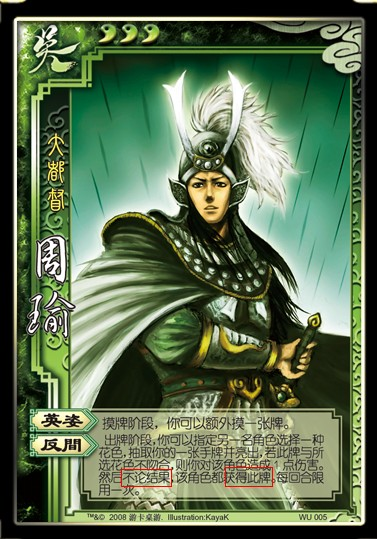
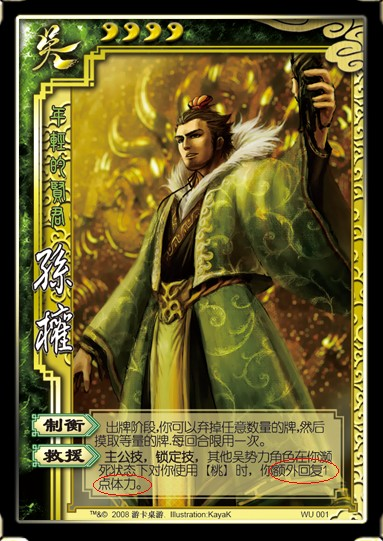

赛场上的三种人
首页
五子棋交流
#1 赛场上的三种人 作者：小丸.net 发表时间：2012-6-21 10:38:43

［ 暮雨迟 于 2012-6-21 12:46:43 时花20金币送鲜花一朵］
#2 Re:赛场上的三种人 作者：陶涛业余 发表时间：2012-6-21 11:10:26
请问一桃三血是神马
#3 Re:赛场上的三种人 作者：暮雨迟 发表时间：2012-6-21 12:49:15
特别喜欢刻画得入木三分的表情，乐翻啦
#4 Re:赛场上的三种人 作者：灯塔连珠 发表时间：2012-6-28 17:00:03
一桃三血：三国杀游戏中的一种游戏技法。一血的孙权主，忠臣周瑜手里有个桃，让孙权猜，孙权猜错了的话就加三血。
#5 Re:赛场上的三种人 作者：伤情路 发表时间：2012-6-29 23:17:35
周瑜的反间，就算猜方因猜错而进入濒死阶段，还是得先拿到反间牌的..所以一桃3血只是在以前OL有BUG版本下才能实现..
#6 Re:赛场上的三种人 作者：小丸.net 发表时间：2012-6-30 5:37:10
楼上两位的解释都不到位。仔细去看看我做的FAQ吧。。。。三国杀是技术活。
说好了：一桃三血不是BUG.....
#7 Re:灯塔连珠【==Re:赛场上的三种人==】 作者：小丸.net 发表时间：2012-6-30 9:33:54
引用：
原文由 灯塔连珠 发表于 2012-6-28 17:00:03 :
一桃三血：三国杀游戏中的一种游戏技法。一血的孙权主，忠臣周瑜手里有个桃，让孙权猜，孙权猜错了的话就加三血。
1.严格的讲，这里不需要周瑜一定是忠臣，孙权的主公技牌面规定只要是吴势力的角色即可。
2.这里并非是一次性加三血，而二血+1桃。
引用：
原文由 伤情路 发表于 2012-6-29 23:17:35 :
周瑜的反间，就算猜方因猜错而进入濒死阶段，还是得先拿到反间牌的..所以一桃3血只是在以前OL有BUG版本下才能实现..
反间牌是结算完以后才到孙权手中的。一桃三血是技能配合所形成的，因此，肯定不是OL的BUG.....
一桃三血的具体结算过程：
周瑜将手中的一张牌【必须是桃，而且尽量是最后一张牌】让一血的主公孙权猜，孙权故意猜错（黑桃或梅花），此时主公濒死求桃，而此时的这张反间牌还属于周瑜所有【反间】一件插入【救援】事件，周瑜可以使用这张反间牌桃救孙权，根据孙权的主公技规则，孙权可以恢复2血，然后这张桃进入弃牌堆，接着，继续结算周瑜的【反间】，当【反间】结束后，反间牌不论在那里，都归被反间人所有，因此，这张已经进入弃牌堆的桃，应该归孙权所有。
有兴趣可以去五子棋三国杀群找一下我编写的三国杀FAQ.

［此帖子已被 小丸.net 在 2012-6-30 9:36:44 编辑过］
［此帖子已被 小丸.net 在 2012-6-30 9:38:35 编辑过］
#8 Re:赛场上的三种人 作者：蹲街丶式寂寞 发表时间：2012-6-30 11:14:56
 说中了...我属于第一种人...菜鸟估计都属这种吧...
说中了...我属于第一种人...菜鸟估计都属这种吧...
#9 Re:小丸.net【==赛场上的三种人==】 作者：冰雪笑醉 发表时间：2012-6-30 11:49:56
#10 Re:赛场上的三种人 作者：忧郁的双眼 发表时间：2012-6-30 13:06:22
小丸你有男朋友了么？ ［ 黄药师 于 2012-7-2 23:22:22 时花20金币送鲜花一朵］
#11 Re:赛场上的三种人 作者：伤情路 发表时间：2012-6-30 13:10:29
官方FAQ都是像小丸说的那样结算，但最近玩多了OL以及太阳神版的三国杀，都发现他们采用的都是先获得反间牌，再去结算伤害等等事件。。但其实我个人觉得都不太合理，如果先结算反间事件，最后获得反间牌，这样就会出现一桃三血，以及周瑜反间夏侯，刚烈+反间可以只损失两牌（刚烈时弃掉反间牌）；如果先获得反间牌再去结算反间事件，就和郭嘉天妒那样，获得天妒牌再结算事件，可以在濒死阶段用反间牌自救。所以我觉得最合理的方法是，当反间开始时，就把反间牌移出游戏，此时反间牌不再属于周嘟嘟，等到结算完所有事件后，反间牌再归被反间者所有，这样对反间、被反间双方相对比较公平。个人看法。。
#12 Re:赛场上的三种人 作者：冰雪笑醉 发表时间：2012-6-30 15:57:10
你们都有男朋友了吗？
#13 Re:赛场上的三种人 作者：屏蔽 发表时间：2012-6-30 17:05:55
我还没有。
#14 Re:赛场上的三种人 作者：小丸.net 发表时间：2012-7-2 13:20:55
我也没有，屏蔽，咱们谈谈
#15 Re:赛场上的三种人 作者：三道 发表时间：2012-7-2 22:56:33
你太老了
#16 Re:赛场上的三种人 作者：冰雪笑醉 发表时间：2012-7-2 23:21:22
 又一对基友。。。
又一对基友。。。
#17 Re:赛场上的三种人 作者：子兮棋兮 发表时间：2012-7-3 9:43:34
属于第一种 瑞定式不会。
#18 Re:赛场上的三种人 作者：湮落梓涵 发表时间：2012-7-14 22:37:34
祝丸子和屏蔽幸福
#19 Re:赛场上的三种人 作者：冰糖雪梨 发表时间：2012-7-14 23:18:55
 同祝 恭喜
同祝 恭喜